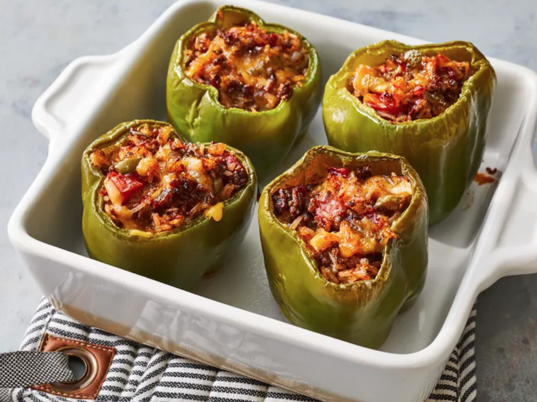

Stuffed Peppers Recipe
Homepage

Nutritious baked stuffed peppers
- Step 1
-
Chop enough reserved green pepper tops to equal 1/4 cup;
set aside. Discard remaining tops or use for another purpose.
-
- Step 2
-
Place hollowed-out green peppers in a microwave-safe dish;
cover and cook in microwave until bright green and steaming,
about 3 minutes. Set peppers aside.
- Step 3
-
Cook and stir ground beef in a skillet with onion and 1/4
cup chopped pepper tops over medium heat until beef is browned,
the juices run clear, and the onion is translucent, about 10 minutes.
Drain excess grease.
- Step 4
-
Pour in diced tomatoes with their juice, rice, water, Worcestershire
sauce, salt, and black pepper; bring to a boil. Reduce heat to low,
cover skillet, and simmer until rice is tender, about 30 minutes.
- Step 5
-
Preheat the oven to 350 degrees F (175 degrees C).
- Step 6
-
Stir Cheddar cheese into ground beef-rice mixture and spoon mixture into
precooked peppers. Set peppers upright in an 8x8-inch baking dish.
- Step 7
-
Bake in the preheated oven until cheese is melted and peppers are tender,
about 30 minutes.
Back to top